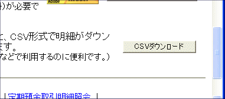
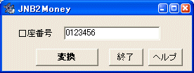
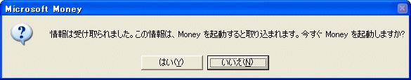

ジャパンネット銀行の場合は、取引明細を参照すると、 以下のようにページの下の方に CSV ファイルをダウンロードするためのボタンが現れますので、これを押してください。

CSV ファイルのダウンロードが始まりますので、適当なフォルダに保存してください。

オンラインバンキングの口座番号をテキストボックスに入力してください。 （持っていないものについては空欄のままでOKです） そして「変換」ボタンを押します。
「ファイルを開く」ダイアログが開きますので、先ほど保存した CSV ファイルを 指定してください。これで Microsoft Money 電子明細が生成されます。

「はい」を押してください。Microsoft Money が自動的に起動し、 電子明細が取り込まれます。